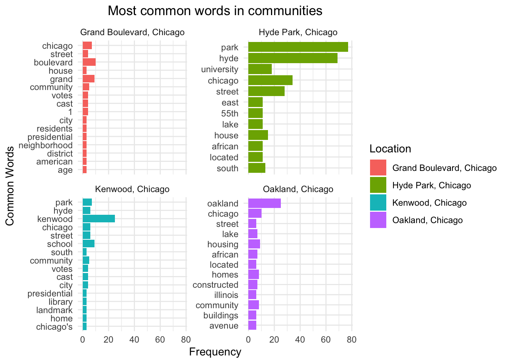

You may work in pairs or individually for this assignment. Make sure you join a group in Canvas if you are working in pairs. Turn in this assignment as an HTML or PDF file to ELMS. Make sure to include the R Markdown or Quarto file that was used to generate it. Include the GitHub link for the repository containing these files.
library(xml2)library(rvest)library(tidyverse)
── Attaching core tidyverse packages ──────────────────────── tidyverse 2.0.0 ──
✔ dplyr 1.1.3 ✔ readr 2.1.4
✔ forcats 1.0.0 ✔ stringr 1.5.0
✔ ggplot2 3.4.4 ✔ tibble 3.2.1
✔ lubridate 1.9.3 ✔ tidyr 1.3.0
✔ purrr 1.0.2
── Conflicts ────────────────────────────────────────── tidyverse_conflicts() ──
✖ dplyr::filter() masks stats::filter()
✖ readr::guess_encoding() masks rvest::guess_encoding()
✖ dplyr::lag() masks stats::lag()
ℹ Use the conflicted package (<http://conflicted.r-lib.org/>) to force all conflicts to become errors
library(robotstxt)
Web Scraping
In this assignment, your task is to scrape some information from Wikipedia. We start with the following page about Grand Boulevard, a Chicago Community Area.
The ultimate goal is to gather the table “Historical population” and convert it to a data.frame.
As a first step, read in the html page as an R object. Extract the tables from this object (using the rvest package) and save the result as a new object. Follow the instructions if there is an error. Use str() on this new object -- it should be a list. Try to find the position of the “Historical population” in this list since we need it in the next step.
# check whether robot is allowed on this websitepaths_allowed("https://en.wikipedia.org/wiki/Grand_Boulevard,_Chicago")
en.wikipedia.org
[1] TRUE
#read in the information from the first results page.url <-read_html("https://en.wikipedia.org/wiki/Grand_Boulevard,_Chicago")tables <-html_table(url)str(tables)
List of 7
$ : tibble [26 × 2] (S3: tbl_df/tbl/data.frame)
..$ Grand Boulevard: chr [1:26] "Community area" "Community Area 38 - Grand Boulevard" "The Harold Washington Cultural Center" "Location within the city of Chicago" ...
..$ Grand Boulevard: chr [1:26] "Community area" "Community Area 38 - Grand Boulevard" "The Harold Washington Cultural Center" "Location within the city of Chicago" ...
$ : tibble [11 × 4] (S3: tbl_df/tbl/data.frame)
..$ Census : chr [1:11] "1930" "1940" "1950" "1960" ...
..$ Pop. : chr [1:11] "87,005" "103,256" "114,557" "80,036" ...
..$ .mw-parser-output .sr-only{border:0;clip:rect(0,0,0,0);clip-path:polygon(0px 0px,0px 0px,0px 0px);height:1px;margin:-1px;overflow:hidden;padding:0;position:absolute;width:1px;white-space:nowrap}Note: chr [1:11] "" "" "" "" ...
..$ %± : chr [1:11] "—" "18.7%" "10.9%" "−30.1%" ...
$ : tibble [6 × 17] (S3: tbl_df/tbl/data.frame)
..$ Places adjacent to Grand Boulevard, Chicago: chr [1:6] "Armour Square, Chicago\nDouglas, Chicago\nOakland, Chicago\n\n\n\nFuller Park, Chicago\n\nGrand Boulevard, Chic"| __truncated__ "Armour Square, Chicago" "" "Fuller Park, Chicago" ...
..$ Places adjacent to Grand Boulevard, Chicago: chr [1:6] "Armour Square, Chicago\nDouglas, Chicago\nOakland, Chicago\n\n\n\nFuller Park, Chicago\n\nGrand Boulevard, Chic"| __truncated__ "Douglas, Chicago" "" "Grand Boulevard, Chicago" ...
..$ : chr [1:6] "Armour Square, Chicago" "Oakland, Chicago" "" "Kenwood, Chicago" ...
..$ : chr [1:6] "Douglas, Chicago" NA NA NA ...
..$ : chr [1:6] "Oakland, Chicago" NA NA NA ...
..$ : logi [1:6] NA NA NA NA NA NA
..$ : logi [1:6] NA NA NA NA NA NA
..$ : logi [1:6] NA NA NA NA NA NA
..$ : chr [1:6] "Fuller Park, Chicago" NA NA NA ...
..$ : chr [1:6] "Grand Boulevard, Chicago" NA NA NA ...
..$ : chr [1:6] "Kenwood, Chicago" NA NA NA ...
..$ : logi [1:6] NA NA NA NA NA NA
..$ : logi [1:6] NA NA NA NA NA NA
..$ : logi [1:6] NA NA NA NA NA NA
..$ : logi [1:6] NA NA NA NA NA NA
..$ : chr [1:6] "Washington Park, Chicago" NA NA NA ...
..$ : chr [1:6] "Hyde Park, Chicago" NA NA NA ...
$ : tibble [5 × 3] (S3: tbl_df/tbl/data.frame)
..$ X1: chr [1:5] "Armour Square, Chicago" "" "Fuller Park, Chicago" "" ...
..$ X2: chr [1:5] "Douglas, Chicago" "" "Grand Boulevard, Chicago" "" ...
..$ X3: chr [1:5] "Oakland, Chicago" "" "Kenwood, Chicago" "" ...
$ : tibble [9 × 2] (S3: tbl_df/tbl/data.frame)
..$ .mw-parser-output .navbar{display:inline;font-size:88%;font-weight:normal}.mw-parser-output .navbar-collapse{float:left;text-align:left}.mw-parser-output .navbar-boxtext{word-spacing:0}.mw-parser-output .navbar ul{display:inline-block;white-space:nowrap;line-height:inherit}.mw-parser-output .navbar-brackets::before{margin-right:-0.125em;content:"[ "}.mw-parser-output .navbar-brackets::after{margin-left:-0.125em;content:" ]"}.mw-parser-output .navbar li{word-spacing:-0.125em}.mw-parser-output .navbar a>span,.mw-parser-output .navbar a>abbr{text-decoration:inherit}.mw-parser-output .navbar-mini abbr{font-variant:small-caps;border-bottom:none;text-decoration:none;cursor:inherit}.mw-parser-output .navbar-ct-full{font-size:114%;margin:0 7em}.mw-parser-output .navbar-ct-mini{font-size:114%;margin:0 4em}vteCommunity areas in Chicago: chr [1:9] "Far North" "Northwest" "North" "Central" ...
..$ .mw-parser-output .navbar{display:inline;font-size:88%;font-weight:normal}.mw-parser-output .navbar-collapse{float:left;text-align:left}.mw-parser-output .navbar-boxtext{word-spacing:0}.mw-parser-output .navbar ul{display:inline-block;white-space:nowrap;line-height:inherit}.mw-parser-output .navbar-brackets::before{margin-right:-0.125em;content:"[ "}.mw-parser-output .navbar-brackets::after{margin-left:-0.125em;content:" ]"}.mw-parser-output .navbar li{word-spacing:-0.125em}.mw-parser-output .navbar a>span,.mw-parser-output .navbar a>abbr{text-decoration:inherit}.mw-parser-output .navbar-mini abbr{font-variant:small-caps;border-bottom:none;text-decoration:none;cursor:inherit}.mw-parser-output .navbar-ct-full{font-size:114%;margin:0 7em}.mw-parser-output .navbar-ct-mini{font-size:114%;margin:0 4em}vteCommunity areas in Chicago: chr [1:9] "Rogers Park\nWest Ridge\nUptown\nLincoln Square\nEdison Park\nNorwood Park\nJefferson Park\nForest Glen\nNorth "| __truncated__ "Portage Park\nIrving Park\nDunning\nMontclare\nBelmont Cragin\nHermosa" "North Center\nLake View\nLincoln Park\nAvondale\nLogan Square" "Near North Side\nThe Loop\nNear South Side" ...
$ : tibble [2 × 2] (S3: tbl_df/tbl/data.frame)
..$ vteNeighborhoods in Chicago: chr [1:2] "Recognized by the City of Chicago" "Other districts and areas recognized by the community"
..$ vteNeighborhoods in Chicago: chr [1:2] "Albany Park\nAndersonville\nArcher Heights\nAshburn\nAuburn Gresham\nAvalon Park\nAvondale\nBack of the Yards\n"| __truncated__ "Altgeld Gardens\nArmour Square\nBig Oaks\nBowmanville\nBoystown\nBudlong Woods\nBuena Park\nCanaryville\nCentra"| __truncated__
$ : tibble [2 × 2] (S3: tbl_df/tbl/data.frame)
..$ vteChicago: chr [1:2] "Architecture\nBeaches\nClimate\nColleges and universities\nCommunity areas\nCrime\ngangs\nCulture\nDemographics"| __truncated__ "Chicago portal\n Category\n Commons"
..$ vteChicago: chr [1:2] "Architecture\nBeaches\nClimate\nColleges and universities\nCommunity areas\nCrime\ngangs\nCulture\nDemographics"| __truncated__ "Chicago portal\n Category\n Commons"
Extract the “Historical population” table from the list and save it as another object. You can use subsetting via [[…]] to extract pieces from a list. Print the result.
pop <- tables[[2]]
You will see that the table needs some additional formatting. We only want rows and columns with actual values (I called the table object pop).
pop <- pop[2:10, -3]colnames(pop) <-c("Year", "Population", "%Change")pop
That’s it for this page. However, we may want to repeat this process for other community areas. The Wikipedia page https://en.wikipedia.org/wiki/Grand_Boulevard,_Chicago has a section on “Places adjacent to Grand Boulevard, Chicago” at the bottom. Can you find the corresponding table in the list of tables that you created earlier? Extract this table as a new object.
pagb <- tables[[4]]pagb
# A tibble: 5 × 3
X1 X2 X3
<chr> <chr> <chr>
1 "Armour Square, Chicago" "Douglas, Chicago" "Oakland, Chicago"
2 "" "" ""
3 "Fuller Park, Chicago" "Grand Boulevard, Chicago" "Kenwood, Chicago"
4 "" "" ""
5 "" "Washington Park, Chicago" "Hyde Park, Chicago"
Then, grab the community areas east of Grand Boulevard and save them as a character vector. Print the result.
east_gb <-as.character(pagb$X3) # commubity east of GBeast_gb <- east_gb[-2]east_gb <- east_gb[-3] # to remove the extra space""east_gb
[1] "Oakland, Chicago" "Kenwood, Chicago" "Hyde Park, Chicago"
We want to use this list to create a loop that extracts the population tables from the Wikipedia pages of these places. To make this work and build valid urls, we need to replace empty spaces in the character vector with underscores. This can be done with gsub(), or by hand. The resulting vector should look like this: “Oakland,_Chicago” “Kenwood,_Chicago” “Hyde_Park,_Chicago”
To prepare the loop, we also want to copy our pop table and rename it as pops. In the loop, we append this table by adding columns from the other community areas.
pops <- pop #rename the pop table to pops
Build a small loop to test whether you can build valid urls using the vector of places east and pasting each element of it after https://en.wikipedia.org/wiki/ in a for loop. Calling url shows the last url of this loop, which should be https://en.wikipedia.org/wiki/Hyde_Park,_Chicago.
for(i in east) { url <-paste0("https://en.wikipedia.org/wiki/", i) # generate the urlprint(url) #print url}
Finally, extend the loop and add the code that is needed to grab the population tables from each page. Add columns to the original table pops using cbind().
for(i in east) { url <-paste0("https://en.wikipedia.org/wiki/", i) # generate the url tables <-html_table(read_html(url)) # get the tables from the page hispop <- tables[[2]] # get the hispop table hispop <- hispop[2:10, -3]colnames(hispop) <-c("Year", "Population", "%Change") pops <-cbind(pops, hispop)}pops
Suppose we wanted to take the actual text from the Wikipedia pages instead of just the information in the table. Our goal in this section is to extract the text from the body of the pages, then do some basic text cleaning and analysis.
First, scrape just the text without any of the information in the margins or headers. For example, for “Grand Boulevard”, the text should start with, “Grand Boulevard on the South Side of Chicago, Illinois, is one of the …”. Make sure all of the text is in one block by using something like the code below (I called my object description).
Location
1 Grand Boulevard, Chicago
Description
1 Grand Boulevard on the South Side of Chicago, Illinois, is one of the city's Community Areas. The boulevard from which it takes its name is now Martin Luther King Jr. Drive. The area is bounded by 39th to the north, 51st Street to the south, Cottage Grove Avenue to the east, and the Chicago, Rock Island & Pacific Railroad tracks to the west. This is one of the two community areas that encompass the Bronzeville neighborhood, with the other being Douglas. Grand Boulevard also includes the Washington Park Court District neighborhood that was declared a Chicago Landmark on October 2, 1991.[2] The Harold Washington Cultural Center is one of its newer and more famous buildings. It arose on the site that from the 1920s through the 1970s housed a famous center of African American cultural life, the Regal Theater. Among the other notable properties in this neighborhood are the Daniel Hale Williams House, the Robert S. Abbott House, and the Oscar Stanton De Priest House. According to a 2018 US Census American Community Survey, there were 22,784 people and 10,383 households in Grand Boulevard.[1] The racial makeup of the area was 92.56% African American, 2.70% White, 0.70% Asian, and 2.26% from other races. Hispanic or Latino residents of any race were 1.77% of the population.[1] In the area, the population was spread out, with 27.3% under the age of 19, 19.4% from 20 to 34, 22.6% from 35 to 49, 16.4% from 50 to 64, and 14.3% who were 65 years of age or older. The median age was 36.9 years.[1] Grand Boulevard is part of City of Chicago School District #299 and City Colleges of Chicago District #508. The nearest City Colleges campus was Kennedy–King College in Englewood. A high school diploma had been earned by 85.5% of Grand Boulevard residents and a bachelor's degree or greater had been earned by 31.31% of residents compared to citywide figures of 82.3% and 35.6% respectively.[1] The Chicago Transit Authority operates the Chicago "L" system in the Grand Boulevard community area. The Green Line provides rapid transit at four stations: Indiana, 43rd Street, 47th Street and 51st Street stations. The Grand Boulevard community area has supported the Democratic Party in the past two presidential elections by overwhelming margins. In the 2016 presidential election, Grand Boulevard cast 10,081 votes for Hillary Clinton and cast 171 votes for Donald Trump.[4] In the 2012 presidential election, Grand Boulevard cast 10,646 votes for Barack Obama and cast 81 votes for Mitt Romney.[5]
Using a similar loop as in the last section, grab the descriptions of the various communities areas. Make a tibble with two columns: the name of the location and the text describing the location.
Create tokens using unnest_tokens. Make sure the data is in one-token-per-row format. Remove any stop words within the data. What are the most common words used overall?
text <-c()for(i in east) { url <-paste0("https://en.wikipedia.org/wiki/", i) main_text <-read_html(url) %>%html_nodes(".mw-parser-output p") %>%html_text(trim =TRUE) # get the main text# Add the text to the all_text character vector all_text <-c(text, main_text)}data("stop_words") # load the common stopwordstext_df <-data.frame()for (i in1:nrow(location_descriptions)) { description <- location_descriptions$Description[i] text <-data.frame(Description = description) %>%unnest_tokens(word, Description) %>%# Tokenize the text dataanti_join(stop_words) # Remove stop words text$Location <- location_descriptions$Location[i] text_df <-bind_rows(text_df, text)}
Joining with `by = join_by(word)`
Joining with `by = join_by(word)`
Joining with `by = join_by(word)`
Joining with `by = join_by(word)`
text_count <- text_df %>%count(Location, word, sort =TRUE) # count the most common words
Plot the most common words within each location. What are some of the similarities between the locations? What are some of the differences?
library(ggplot2)top <-12# here we want to plot the top 12 popular words within each location# Get top 12 words for each locationtop_words <- text_count %>%group_by(Location) %>%slice_max(n, n = top) # Get top 12 words for each locationtop_words
# A tibble: 57 × 3
# Groups: Location [4]
Location word n
<chr> <chr> <int>
1 Grand Boulevard, Chicago boulevard 10
2 Grand Boulevard, Chicago grand 9
3 Grand Boulevard, Chicago chicago 7
4 Grand Boulevard, Chicago community 5
5 Grand Boulevard, Chicago 1 4
6 Grand Boulevard, Chicago cast 4
7 Grand Boulevard, Chicago street 4
8 Grand Boulevard, Chicago votes 4
9 Grand Boulevard, Chicago age 3
10 Grand Boulevard, Chicago american 3
# ℹ 47 more rows
ggplot(top_words, aes(x = n, y =reorder(word, n), fill = Location)) +geom_col() +facet_wrap(~Location, scales ="free_y") +labs(x ="Frequency", y ="Common Words", title ="Most common words in communities") +theme_minimal() +theme(plot.title =element_text(hjust =0.5))

Differences: The common words in Hyde Park have higher frequency than common words in other communities. The word “university” has been common used in the Hyde Park area, and this may be explained by the location of University of Chicago (residing inside this area).
Similarity: The name of the community (e.g., kenwood, hyde, park, oakland, grand) are part of the most common words used in their corresponding communities. All 4 areas have “chicago” as their most common words used.